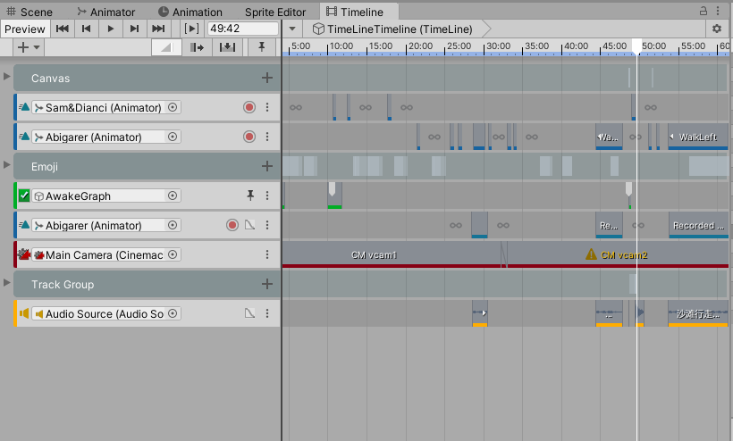

Unity编辑器扩展：使用xNode制作自己的可视化工具（2）
大家好，我是炎拳。
上一篇文章：使用Xnode制作可视化剧本编辑插件（1），简单的展示了我使用xNode 制作的小工具，这一篇就来分享下Xnode的用法，以及在开发过程中收获的一些编辑器扩展的知识。
在使用xNode 开发前，还是需要略微了解一些Unity3D中的定制特性：例如当你不想在面板上显示你的公开字段，你可以在字段上添加[HideInInspector]，它的功能是在Inspector面板中隐藏public属性，没有序列化的功能。
我简单写了一篇读书笔记，给同样是新手的朋友做个参考：
Unity3D 中的定制特性以及简单的编辑器扩展案例
引用书中的一段话简单解释就是：定制特性其实是一个类型的实例。Mono之所以能跨平台原因便是其符合”公共语言规范（Common Language Specification (CLS)）“的要求，根据公共语言规范定制特性类必须直接或者间接从公共抽象类System.Attribute派生。
知道了C#中的特性是从System,Attribute 派生而来的一个类的实例。同样，Unity中C#的游戏脚本也有派生自system.Attribute中的特性，Xnode 中的定制特性同样如此。
xNode的用途和下载途径
再简单的介绍下xNode，它是一个完全开源的免费插件，官方文档的介绍很吸引人：
xNode是超级用户友好的，直观的，它将帮助您快速了解节点图。由于占用的空间很小，它非常适合作为自定义状态机、对话系统、决策树的基础架构。
xNode官方文档也较为齐全，节省了我很多学习时间，在Github上获取最新的xNode工程，扔到你的Unity工程下就可以使用了，地址在这：
xNode的核心概念
援引自官方文档，一个xNode项目由这三个部分组成：
Graph
每个xNode项目都从创建Graph开始，Graph可以看成是你图形化界面的入口，新建一个自定义Graph也很简单，以我的工具为例：
1 | using XNode; |
然后通过菜单生成新的Graph，Graph中包含了项目中Node列表的信息，可以在面板上直接进行操作：
接着看看自定义Graph的父类NodeGraph，可以发现它也同样是继承了Unity ScriptableObject的抽象子类，并且提供了丰富的Node相关虚方法：
对ScriptableObject感兴趣的朋友可以自行搜索资料，不懂也没关系，你只要知道它的用法就好：在编辑器会话期间，将数据保存为项目中的资源，这样方便在项目运行的时候使用。
Node
自定义Graph继承自NodeGraph，自定义的Node继承自Node，一个标准的Node包含单个输入端口和输出端口，通过对任意公开字段添加[Input]或[Output]属性生成：
1 | public class SimpleNode : Node { |
Node同样是一个继承自ScriptableObject的抽象类，从Node派生出的任何自定义Node子类，都是有效节点，同时会默认添加到Graph的上下文菜单中，如图所示：
也可以自定义Node的样式和名称
1 |
|
Port
端口（port）是节点（Node）之间通信的大门，他们既可以是输入，也可以是输出。一个Node可以包含多个port。
一般只要Unity能序列化的类型都可以作为端口，当然我们可能需要在Node上动态添加或者删除端口，这里就需要去定义单独Node上端口的渲染了，之后会详细说。
这里放个端口的常见用法（在Node类中）：获取其连接的node1
2
3
4
5
6
// Get the connected node.
NodePort otherPort = GetOutputPort("myOutput").Connection
if (otherPort != null) {
MyNode nextNode = otherPort.node as MyNode;
}
StoryEditor制作思路 & 魔改xNode
介绍完基础概念，接下来分享下制作这个剧本编辑插件的过程和一些有意思的问题：
首先，我的需求是能快速制作一段类似《星露谷物语》中过场演出，虽然玩家触发剧情的时间和方式都比较随机，但还是每段剧情本身还是遵循传统的树状叙事结构，通过玩家的选择来触发剧情：
但在《星露谷物语》中，玩家和NPC对话的过程会时不时穿插一些人物的动作和表情，来丰富演出效果，伴随的可能有对话UI短暂消失等待人物动画播放完成，终止UI点击事件等需求。所以我需要为每一段对话提供一些功能选项，方便快速配置这些功能。
如何定义每段对话也很重要，Xnode Graph所采用的渲染方法来自Unity的EditorWindow类，移动鼠标时会强制调用OnGUI（）进行刷新，所以Graph中的Node越多，刷新次数就越多，不少开发者也遇到了大量Node存在时刷新卡顿的问题。如果每段对话都使用一个Node，那200句话可能就要新建一个Graph，并且修改起来十分麻烦，所以最终我希望能在一个Node中尽可能的添加对话，所以对话Node应该是这样：
功能如下：对话依次向下播放，根据对话类型，对话框展示出不同的效果。如果一段对话过长或者遇到了选择分支，也可以更改对话类型来主动生成一个输出端口进行跳转。
思路清晰了，但问题是怎么在Xnode上渲染出这样的界面呢？xNode提供了解决方案，首先是更加深入的自定义Node外观，官方提供了一个简单的加法器案例：
1 | // SimpleNode.cs |
1 | // Editor/SimpleNodeEditor.cs |
自定义内容的问题貌似解决了，照葫芦画瓢就好，但如何让xNode根据一个对话列表来生成多个端口呢？官方也提供了一个实验性质的方法-Dynamic Port List：
1 | public class SimpleNode : Node { |
看起来图中的节点作为剧本中的选择项不错，但作为对话节点还是过于混乱了，我并不需要每个对话元素都显示一个端口。
好在xNode 给我们提供了自定义绘制列表的方法，实际上最新版本的xNode中已经集成了部分Odin的功能（不知道它怎么打通关节的哈哈），Odin同样是一款绘制Unity界面非常好用的工具，比方说Unity和C#并未支持字典的序列化，在Odin的支持下我们可以很轻松的让字典在Unity Inspector面板中显示并修改：
在xNode的界面同样支持Odin，但我对Odin的了解不多，还是没法达成想要的效果，最终还是选择使用Unity自身的编辑器拓展方法，原因也很简单，xNode本身绘制列表的方法也是使用Unity ReorderableList（可重排序列表），其中元素可以自由拖动，非常方便，感兴趣的朋友可以看看这篇文章：
Unity编辑器拓展之二：ReorderableList可重新排序的列表框（复杂使用）_静风霁-CSDN博客
最终我做出来的效果如下：

代码还挺长的，感兴趣的朋友可以直接去上一篇文章中下载工程看看，只提一点很重要的，xNode本身并未考虑到我这样奇葩的需求，一开始我发现并不能通过修改类型自由生成Port，最后在老师的帮助下发现了原因，稍微改了下DynamicPortList这个方法，有需要的朋友自取:
1 |
|
1 |
|
1 | 自定义绘制List及其中元素的方法： |
程序实现思路 & Story Editor
最后再聊聊程序实现的思路，实际上和树状叙事一样，首先得有一个StartNode，用于定位这段剧本从哪开始；再进入ChatNode或是OptionNode，根据每个元素的类型决定如何播放对话，之后在程序中获取所有的Node，根据类型依次执行就好了:
我在其中又增加了自由触发方法的对话类型，只需要提前在面板上手动注册过方法，就可以在对话过程中自由调用，通过这种方法和Unity Timeline的Signer配合使用，最后大致完成了想要的过场演出:


总结下来，实际上这个工具配合Timeline还是有很多不足，因为暂停和播放TimeLine都是由Graph中的数据控制的，实际上应该由Timeline来主导这一切。这导致我对Timeline播放的时间无法直观的控制，之后可能还会改进。
市面上已经有不少完善强大的剧本编辑插件，但自己造轮子的过程确实收获颇多，最后放个xNode文档链接：